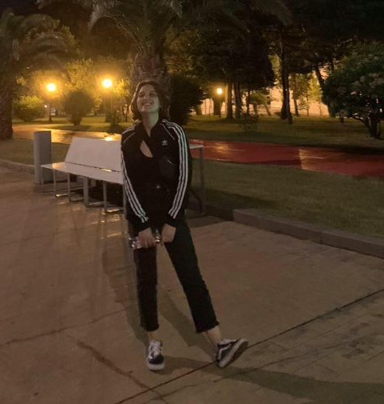

Mariam Abdaladze

Summary
More than 3 years' experience in customer service industry focusing on developing skills. I am dynamic, presentable and have a passion to deal with people. Able working in a team, fast learning, non-conflict, able to work extra hours if compnay needs, flexible, dedicated. I am looking forward to join such organization whereby I could develop my career and be a part of supportive family member.
Education
- Gori public School #3
- Ivane Javakhishvili State University Humanities, oriental studies, Arabic
Experience
- Health insurance company "Imedi L
- Project manager, Global Vision Georgia
- Au Pair Maedchen
- Sales Representative "Envirotech"
- From Jan 2019- Oct 2020
- Responsibilities: providing different services to the customers depending on their needs, solving problems and helping finding solutions.
- Sales Representative "Penta Group"
- From Oct 2020- March 2021
- Project Manager "Penta Group"
- From March 2021- March 2023
- Responsibilities: Being a manage of a smal group (team of 10), helping them out to provide excellent cusotemr support and sales skills, Improving their knowledge, finding the ways of solving problems, brain storming and making them valuable team members, whose are orientated to become professionals and use their skills for the company's development.
- Real Estate Agent "Korter"
Skills
- Problem solving
- Time management
- Negotiation
- Decision making>
- Sales & Administrative
Foreign Language skills:
- Russian: Fluent wiritng, reading and speaking
- English: Fluent writing, reading and speaking
- German: Limited workign proficiency and speaking
- Georgian: native
- Arabic: Basic
Other
Contact me